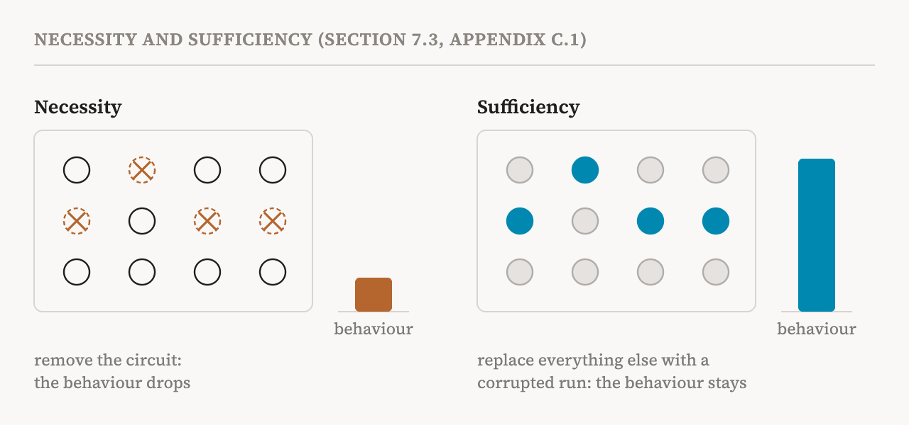
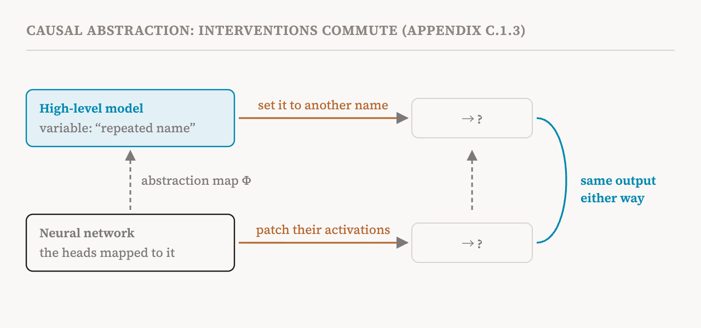

Parts 16 and 17 described how circuits are found. Every method there produces a candidate: a set of components, or features, and connections between them, claimed to carry out a behaviour. This part covers section 7.3 of the book (page 57), together with the short appendix on causal reasoning that the book provides at the end (page 180). It asks two questions about any candidate circuit. Is it really causally responsible for the behaviour? And can we modify the behaviour reliably through it?
Necessity and sufficiency
The book's appendix states the two basic tests in a line each. A component is necessary for a behaviour if removing it makes the behaviour disappear. A component is sufficient for a behaviour if, when only that component is active, the behaviour still occurs.
For circuits, necessity is tested by ablation: remove or neutralise the circuit, and see whether the behaviour degrades. Sufficiency is tested the other way round: keep the circuit running on the real input, replace every edge outside it with activations from a corrupted reference run, and see whether the behaviour is reproduced. The appendix describes the same test as an interchange intervention: start from a corrupted run whose input lacks the information the behaviour needs, patch in the circuit's activations from a clean run that has it, and check whether the behaviour appears.

A circuit that passes both tests is usually called faithful. It is necessary, so the behaviour depends on it, and sufficient, so it accounts for the behaviour by itself.
The 60 to 80% problem
Here the book makes a sobering empirical remark. In practice, a circuit is rarely sparse, necessary and sufficient all at once. It typically explains 60 to 80% of the variance in the behaviour. A small circuit leaves part of the behaviour unexplained; a circuit big enough to explain all of it is no longer small, and small was the point.
The reason, according to the book, is that many behaviours depend on distributed representations and several redundant pathways. Part 3's hydra effect is one example: remove one route, and another takes over. Even when a circuit captures the main mechanism, components outside it may still matter, for example by handling unusual cases or by making the computation robust. So "this circuit explains the behaviour" usually means "this circuit explains most of it, most of the time". The book's evaluation framework in part 20 is designed to say how much.
Causal scrubbing
Two approaches go further than simple ablation, and the book names both. The first is causal scrubbing, proposed in 2022. It tests a mechanistic hypothesis by taking it at its word. A hypothesis says which information each part of the circuit uses, and therefore which inputs it should treat as equivalent. Causal scrubbing replaces the model's activations with activations from other inputs that the hypothesis says are equivalent, and checks whether the behaviour is preserved.
An example shows the idea. Suppose your hypothesis says that a certain head in the indirect object circuit only cares about which name was repeated, not what the names are or where the sentence takes place. Then swapping in that head's activation from a different sentence with the same repetition pattern, but different names and places, should change nothing. If the behaviour survives every swap the hypothesis allows, the hypothesis has passed a demanding test. If it breaks, the hypothesis left out something the model uses.
Interchange interventions
The second approach, interchange interventions, tests whether parts of a model correspond to variables in a higher-level description of the task. Activations are swapped between inputs that differ in the value of one high-level variable, and the test checks whether the model's output changes the way the high-level description predicts. If swapping a component's activation from an input where "the first number is larger" to one where it is not makes the model's answer flip accordingly, that component carries the variable. Together, the book says, scrubbing and interchange interventions give much stronger evidence for a mechanistic explanation than observation alone.
Causal abstraction
Interchange interventions belong to a larger theory, causal abstraction, which the book outlines in its appendix but does not treat in depth (part 1 listed it among the topics the book covers only briefly). The question it formalises is when a high-level description, such as "this head implements copying", correctly describes lower-level computation.
The answer is a kind of agreement test. Write down the high-level description as a small causal model with its own variables. Link each high-level variable to some part of the network through an abstraction map. The description is causally correct if intervening on a high-level variable has the same effect as intervening on the parts of the network it maps to. In the appendix's words, the interventions commute: you get the same result whichever way round the square you go.

This is the strongest form of claim interpretability can make. It goes beyond "this part matters" to "this part computes that variable, and the network's behaviour follows from the variables in the way the description says".
Faithfulness as a number, and benchmarks
Recent work has turned faithfulness from a yes-or-no verdict into a continuous score, so that circuits found by different methods can be compared systematically. By combining such scores across tasks and settings, benchmarks such as MIB, the mechanistic interpretability benchmark, evaluate how well circuit discovery methods identify the components that are causally important. Part 20 describes the book's own proposal for scoring interpretability claims along five dimensions, of which causal validity is one.
The second question
Section 7.3 opened with two questions, and this part has mostly answered the first. The second, whether we can modify a behaviour reliably through a circuit we have found, has a less encouraging answer. Part 3 already gave the warning: finding and validating a mechanism does not automatically give reliable control, and an intervention that works in one setting may fail in another. Parts 35 and 36, on editing and steering, return to it.
| Test | What is done | What a pass shows |
|---|---|---|
| Necessity (ablation) | Remove the circuit | The behaviour depends on it |
| Sufficiency | Keep only the circuit; replace everything else with corrupted activations | The circuit can produce the behaviour alone |
| Interchange intervention | Swap activations between inputs that differ in one high-level variable | The parts carry that variable |
| Causal scrubbing | Swap in activations from inputs the hypothesis calls equivalent | The hypothesis captures everything the model uses |
| Causal abstraction | Check that high-level and low-level interventions agree | The high-level description is causally correct |
| Term | Meaning |
|---|---|
| Necessary | Removing it makes the behaviour disappear |
| Sufficient | With only it active, the behaviour still occurs |
| Faithful circuit | A circuit that is both necessary and sufficient for the behaviour |
| Interchange intervention | Swapping activations between inputs to test what information a part carries |
| Causal scrubbing | Testing a hypothesis by swapping in activations from inputs it says are equivalent |
| Causal abstraction | A theory of when a high-level description correctly describes low-level computation |
| Abstraction map | The link between a high-level variable and the parts of the network that compute it |
| Commuting interventions | Interventions that give the same result at the high level and the low level |
| Redundant pathways | Several routes that can each produce the same behaviour |
| MIB | A 2025 benchmark for evaluating circuit discovery and causal variables |
Next, part 19 puts everything so far together on one mechanism, induction heads, seen as a circuit, as features and as something that forms during training.